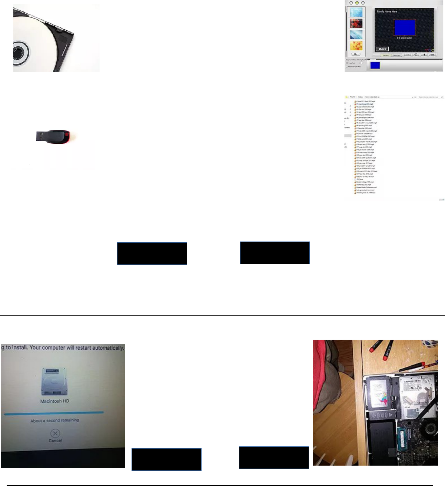

S E R V I C E S
_______
Home Video to DVD/MP4
Home video to DVD:
Your home videos will be digitized and burned to a DVD
complete with menu using DeVeDe (See sample menu on
right) each DVD can hold up to 3 hours of 640x480 (the
resolution old home videos are in) footage. Cost is $5 per
video plus the cost of DVDs
Home video to MP4 :
Your home video will be digitized then the mp4 files will
be copied to a hard drive or flash drive to be played on a
computer, Ruku, smart TV, etc. Cost is $4 per tape plus
the cost of a flash drive or hard drive.
Both:
Get both MP4 files and DVDs. Cost: $6 per tape
plus the cost of DVDs and flash drive or hard drive.
I keep a back up of your video for 30 days, in the event that something happens to your drive in these 30 days I will
charge a $20 recovery fee plus cost of new drive, I will then keep your video for an additional 30 days. All services with
less then 10 tapes have a $10 fee as well as a $20 minimum charge
COMPUTER REPAIRS/UPGRADES
More info
Order now
I can work on most PCs/Macs, laptops/desktop,
I will not work on a computer I don't feel
confident with. I can do a OS reinstall, SSD
upgrades/hard disk replacement, Ram upgrades,
Virus removal, and more
More info
Order Now